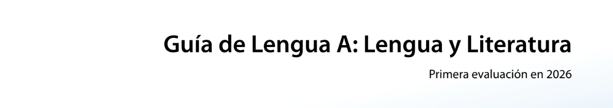
Guías del Bachillerato Internacional
Material oficial del IB para el programa de Lengua y Literatura en español.
Materiales y herramientas para el estudio de Lengua y Literatura

Material oficial del IB para el programa de Lengua y Literatura en español.
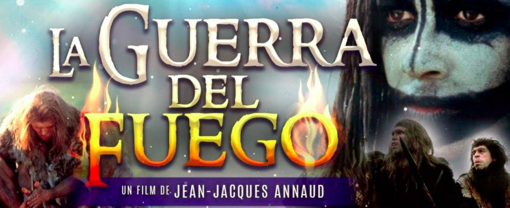
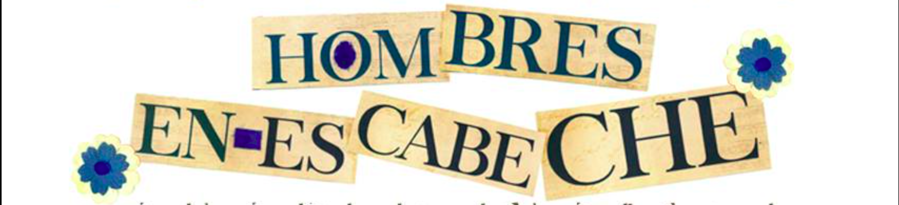
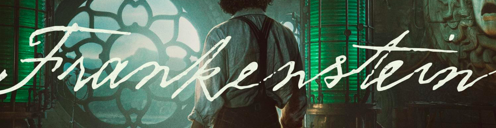
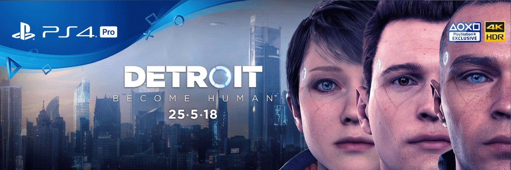
Notas de clase y resúmenes teóricos
Ferdinand de Saussure y el Estructuralismo: Propone una nueva concepción de los hechos del lenguaje, considerándolos como un sistema en el cual los diversos elementos que lo integran ofrecen entre sí una relación de solidaridad y dependencia tal que forman una estructura.
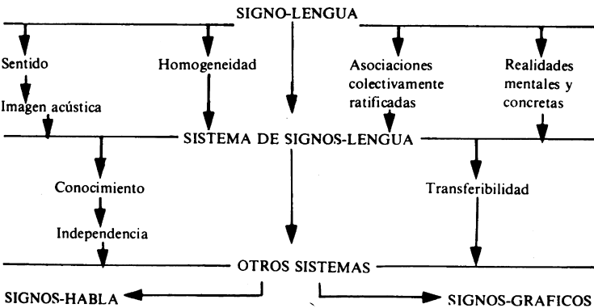
Ciencia que trata de los sistemas de comunicación dentro de las sociedades humanas, estudiando las propiedades generales de los sistemas de signos, como base para la comprensión de toda actividad humana. Aquí, se entiende por signo un objeto o evento presente que está en lugar de otro objeto o evento ausente, en virtud de un cierto código. La RAE los considera sinónimos, no obstante, los intelectuales que estudian los signos establecen diferencias conceptuales.
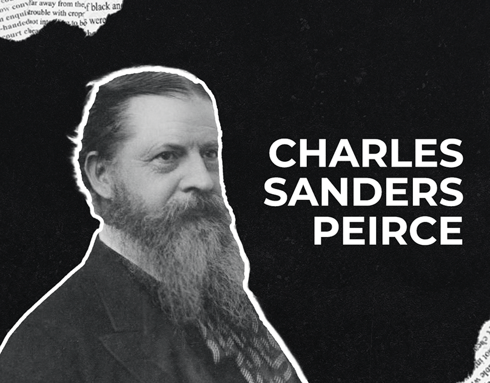
Charles Sanders Peirce (1839-1914)
Una manifestación material y perceptible que representa a otro objeto. Idea de la cosa; la idea que se nos viene a la cabeza cuando decimos una palabra, aquello a lo que nos estamos refiriendo dentro de nuestro mundo real cuando hablamos.
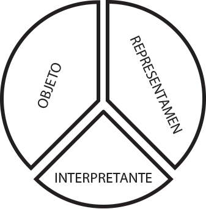
El Objeto: Aquello representado, esto es, aquello de lo que el signo da cuenta.
El Interpretante: O sentido que el signo produce y que se traduce en otro signo o representamen.
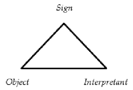
Icónicos o Iconos: Cuyo significante guarda una relación de parecido con su objeto o referente (ej.: mapas, caricaturas, croquis).
Indicios o Indicadores: Cuyo significante guarda una relación natural o de causa-efecto con el objeto o referente (ej.: el humo como signo de fuego, el llanto como signo de emoción intensa).
Símbolos: Aquellos signos en los que la relación significante y objeto o referente no es de semejanza ni natural o de causa-efecto, sino arbitraria, convencional, pactada en el seno de una sociedad.
Se distinguen dos líneas: una enfocada al discurso social y otra a lo visual. La cercanía con la comunicación de masas se ha afianzado gracias a tecnologías en artes audiovisuales, lo que obliga a estudiar signos en informática e inteligencia artificial. Esto podría exigir una unificación entre lenguaje coloquial y nuevas tecnologías, colaborando en el entendimiento de relaciones entre sociedades.
Se encarga de estudiar el proceso a través del cual los medios de comunicación de masas llegaron a integrarse a la cultura de la sociedad, produciendo diversas tipologías en los discursos
Definición: Es un personaje central en la narrativa, a menudo noble, valiente y altruista, que se enfrenta a desafíos para lograr un objetivo o superar un obstáculo.
Función: Encarna la lucha humana por la superación, la búsqueda de significado y el logro del propio potencial.
Caracteristicas: Posee cualidades nobles como la valentía, determinación, lealtad y el deseo de ayudar a los demás.Representa un patrón universal de un personaje (el protagonista) que emprende un viaje transformador, superando obstáculos y evolucionando para alcanzar su potencial y un propósito mayor. Popularizado por Joseph Campbell.
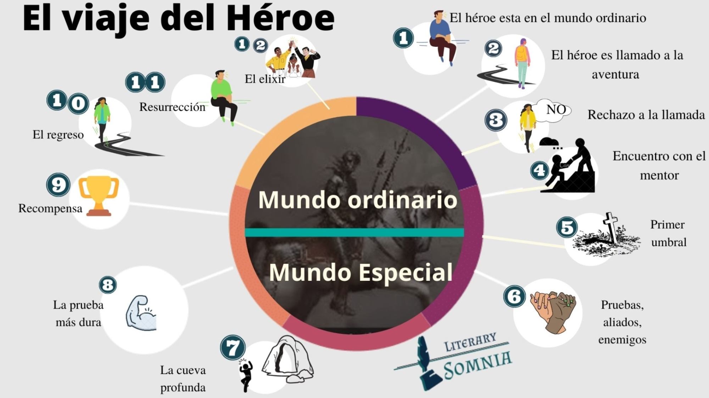
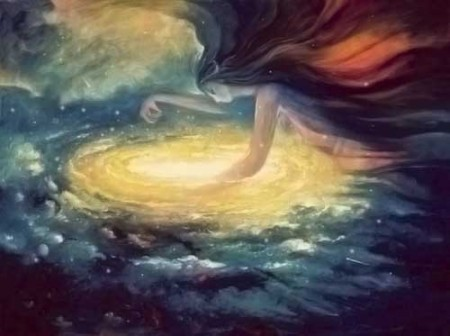
Mitos Cosmogónicos: Relatan la creación del mundo y el universo.
Mitos Teogénicos: Describen el origen y la historia de los dioses.
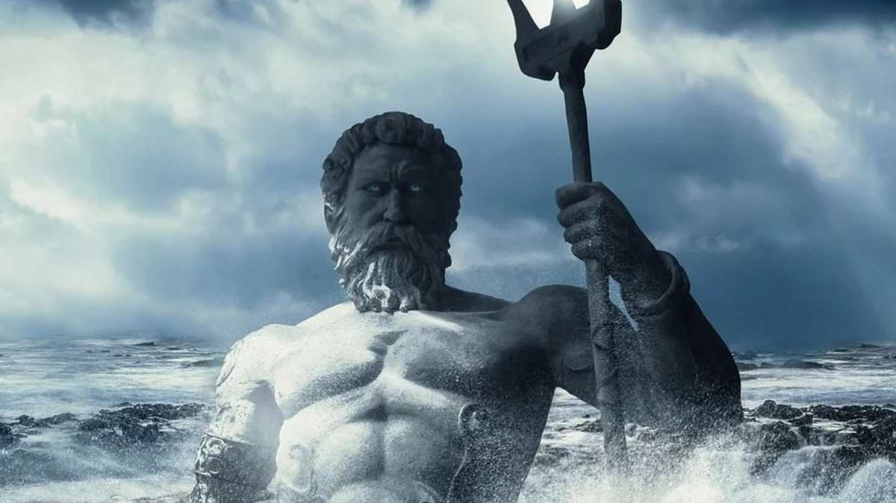
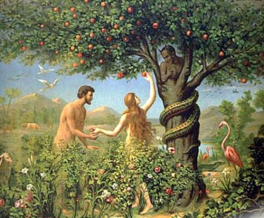
Mitos Antropogénicos: Explican el origen del ser humano y la humanidad.
Mitos Etológicos: Buscan explicar el origen de los seres, fenómenos naturales, técnicas e instituciones.
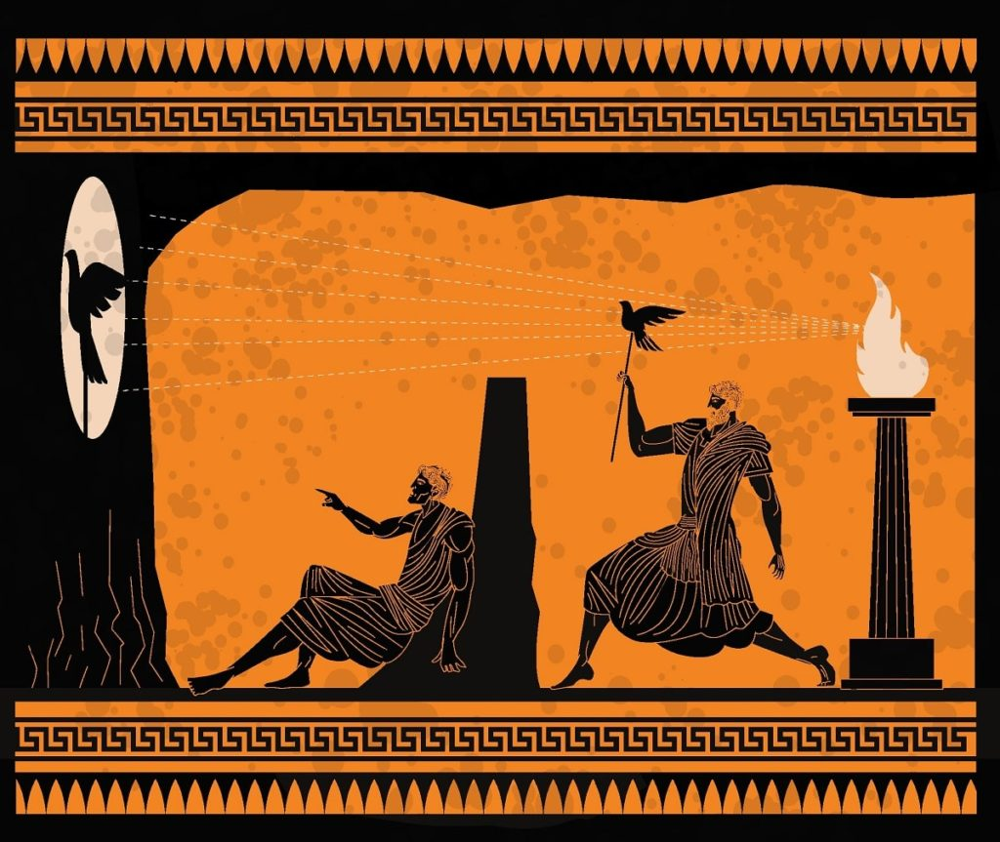
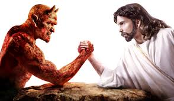
Mitos Soteriológicos: Se centran en el origen del bien y del mal y establecen normas de conducta.
Mitos Fundacionales: Narran la fundación de una ciudad o comunidad.
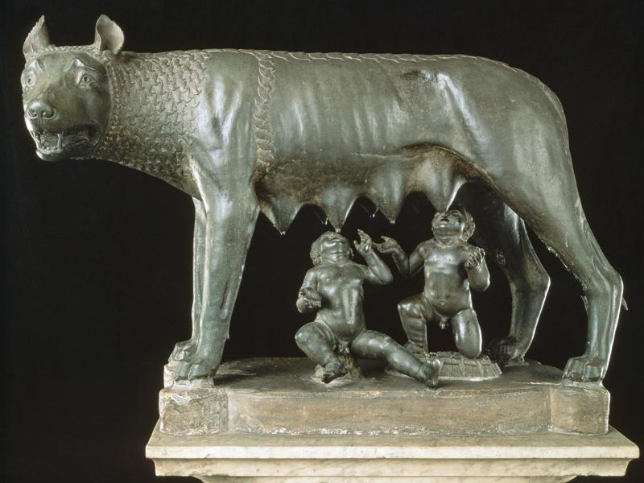
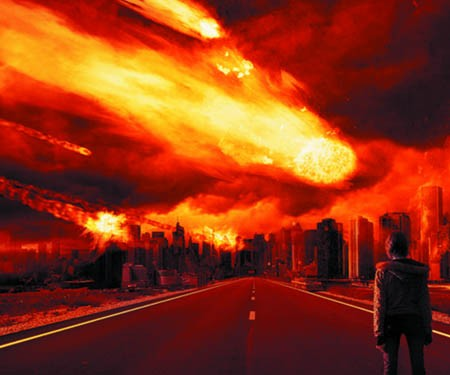
Mitos Escatológicos: Se enfocan en el futuro y el fin del mundo.
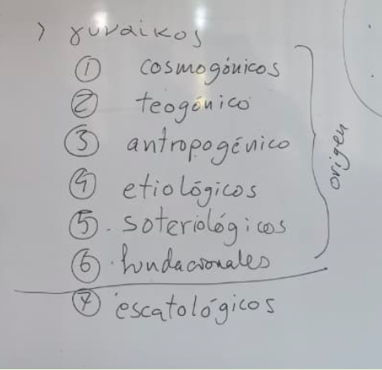
Actividades y ejercicios realizados durante el curso
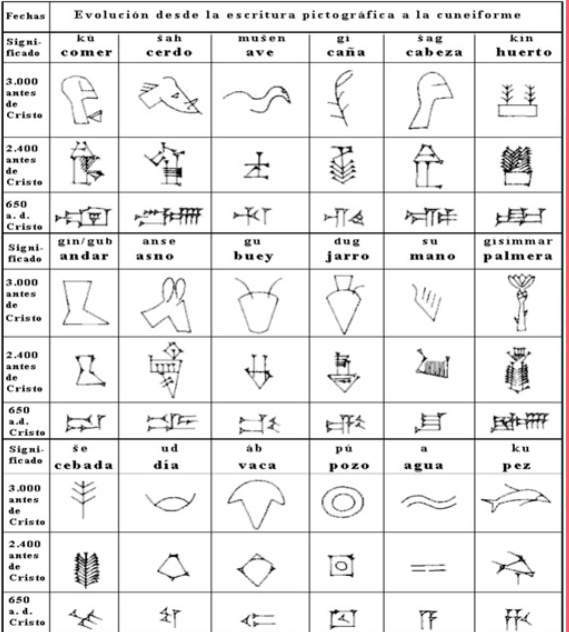
En parejas y de acuerdo con el vocabulario del esquema, escriba las oraciones que se le solicitan (importante: algunas palabras no aparecen en el esquema, deben pensar cómo expresarlas).
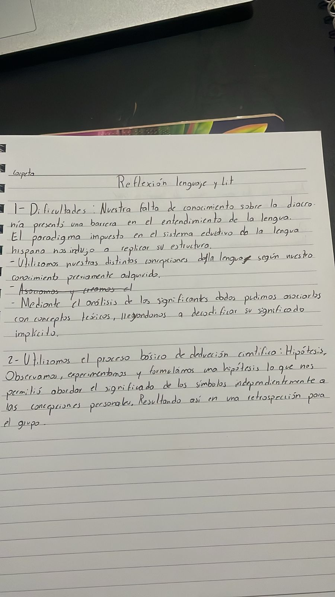
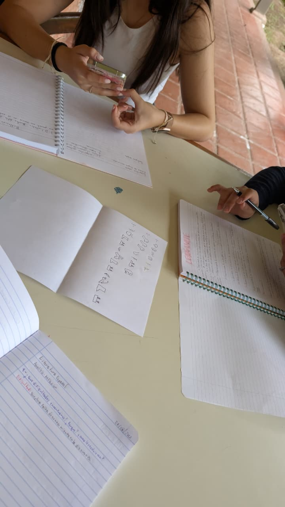
Para superar estas dificultades, aplicamos un proceso de deducción científica similar al método de investigación:
Este método nos permitió abordar el significado de los símbolos de manera objetiva, independientemente de nuestras ideas preconcebidas. El resultado fue una retrospección que enriqueció la comprensión del grupo en su conjunto.
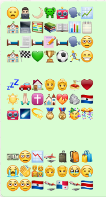
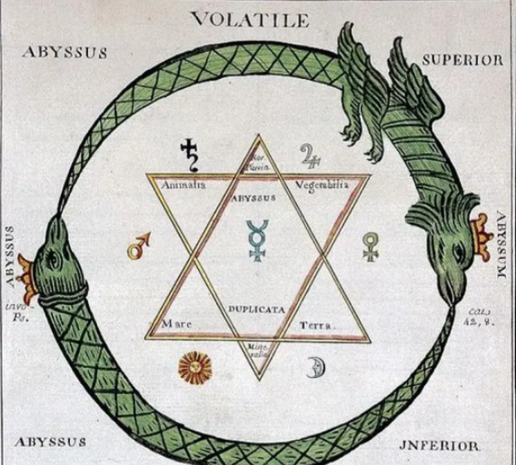
La imagen es un complejo diagrama simbólico de estilo antiguo que parece ser una representación de un sistema filosófico o cosmogónico. En su centro, una serpiente verde con dos cabezas que muerde su propia cola forma un círculo. Este círculo representa un ciclo eterno y la dualidad, reforzada por las palabras "Superior" e "Inferior" y la diferencia entre las dos cabezas de la serpiente (una con alas y otra sin ellas).
Dentro del círculo, una estrella de seis puntas con símbolos de planetas y palabras en latín como "Tierra" y "Mar" sugiere la interacción de fuerzas y elementos fundamentales de la naturaleza. Este diagrama podría ser una representación visual de la alquimia, donde los elementos y las energías se combinan en un proceso cíclico para alcanzar un estado de transformación o perfección. En conjunto, la imagen ilustra la unión de conceptos opuestos para explicar el funcionamiento del cosmos.
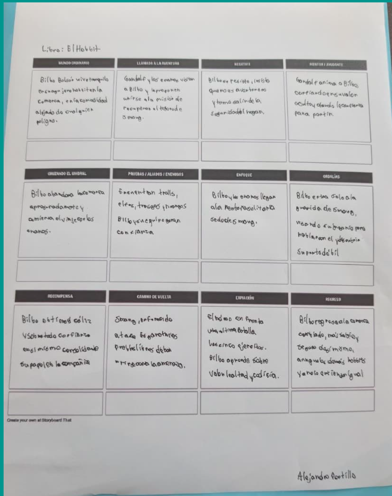
Un storyboard del héroe combina el modelo narrativo del Viaje del Héroe con un storyboard, que es una serie de ilustraciones secuenciales que visualizan una historia, como la de un héroe en su aventura. El proceso de crear este tipo de storyboard implica planificar visualmente las etapas clave del Viaje del Héroe, incluyendo el mundo ordinario, el llamado a la aventura, la superación de pruebas, la obtención de una recompensa y el regreso transformado, con el fin de estructurar la narrativa de manera efectiva.
Storyboard del Héroe
Bilbo Bolsón vive tranquilo en La Comarca hasta que Gandalf y los enanos lo invitan a recuperar el tesoro de Smaug. Al principio rechaza la aventura, pero con la guía de Gandalf decide partir. Durante el viaje enfrenta trolls, trasgos y otras pruebas que lo hacen ganar confianza y astucia. Su gran desafío llega al entrar solo en la guarida de Smaug, donde descubre el punto débil del dragón. Tras ello, presencia la destrucción de Esgaroth y la Batalla de los Cinco Ejércitos, aprendiendo sobre valor y humildad. Finalmente, regresa a su hogar transformado: ya no es el hobbit temeroso del inicio, sino alguien más sabio y seguro de sí mismo.
Proyectos de investigación individual
Investigación profunda sobre un tema literario específico.
🔬 Fase 1
🔬 Fase 2
🔬 Resultados
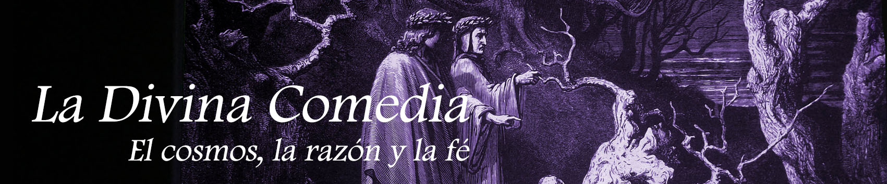
Escrita por Dante Alighieri entre 1308 y 1321, es una epopeya alegórica dividida en tres partes: Infierno, Purgatorio y Paraíso. Este análisis se centra exclusivamente en el Infierno, la primera cantica, donde Dante, guiado por Virgilio, desciende a los nueve círculos del averno para explorar el pecado humano y la justicia divina. En una época de turbulencia política en Italia (exilio de Dante en 1302 debido a conflictos entre güelfos y gibelinos), la obra sirvió como crítica social y moral, poblada de figuras reales como papas corruptos y traidores florentinos.
Dante optó por el toscano vulgar (dialecto florentino) en lugar del latín erudito, democratizando la literatura y sentando las bases del italiano moderno. Esto reflejaba su creencia en que el lenguaje del pueblo podía transmitir verdades universales, elevando el vernacular a un nivel poético. En su momento, esto fue un acto de rebeldía cultural, promoviendo la unidad lingüística en una Italia fragmentada por dialectos regionales.
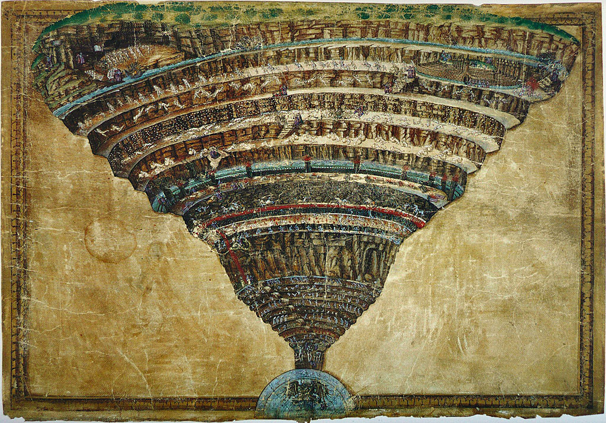

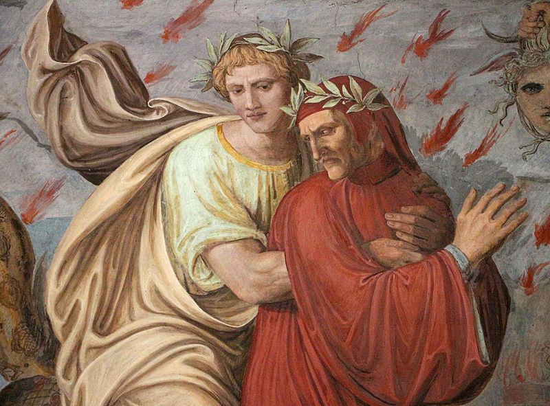
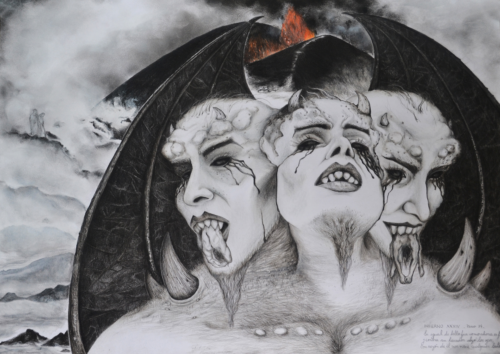
Como estudiante en un contexto multicultural como UWC, veo en Dante un precursor de la globalización lingüística; su elección del italiano vulgar me hace pensar en cómo las lenguas minoritarias hoy, como el guaraní, luchan por preservarse contra dominantes como el inglés o español.
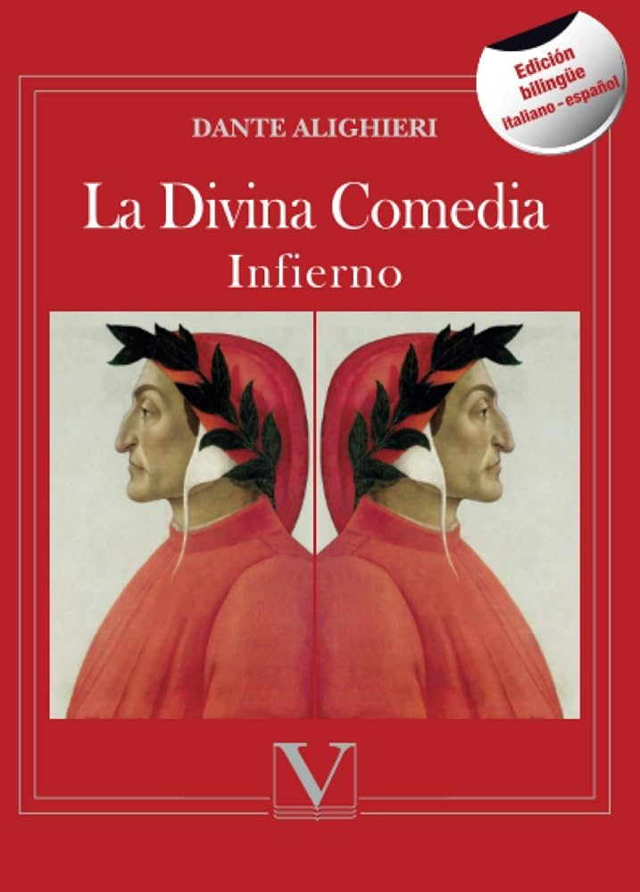
El Infierno estructura el pecado en nueve círculos concéntricos, descendiendo desde los incontinentes (lujuriosos, glotones) hasta los traidores en el centro helado (Cocytus, con Lucifer). Cada círculo representa una gradación moral: los pecados de debilidad (como la lujuria en el segundo círculo, con Paolo y Francesca) son castigados con menos severidad que los de malicia (fraude en el octavo, con Ulises como emblema de astucia perversa).
Dante usa la alegoría para entrelazar lo personal con lo universal: su viaje es una metáfora de la redención espiritual, influenciada por la teología tomista y el amor por Beatriz (ausente en el Infierno, pero motivadora). El "contrapasso" castigo que refleja el pecadoc añade profundidad poética, como los adivinos con cabezas giradas hacia atrás por pretender ver el futuro.
En el siglo XIV, el Infierno fue un espejo satírico de la corrupción eclesiástica y política: Dante condena a rivales reales (ej.: Bonifacio VIII en el octavo círculo), criticando la Iglesia por su mundanidad. Esto le valió enemistades, pero también inmortalidad; la obra impulsó el Renacimiento al fusionar clasicismo (Virgilio como guía) con cristianismo, y promovió el italiano como lengua literaria, influenciando a Petrarca y Boccaccio.
El Infierno moldeó la imaginería occidental del mal (hasta videojuegos como Dante's Inferno). Lingüísticamente, contribuyó al estandarizado italiano, similar a cómo Shakespeare forjó el inglés moderno. En el contexto IB, evoca temas de identidad y transformación: el viaje de Dante es una búsqueda personal que trasciende lo individual, recordándonos que el lenguaje no solo describe el mundo, sino que lo redefine.
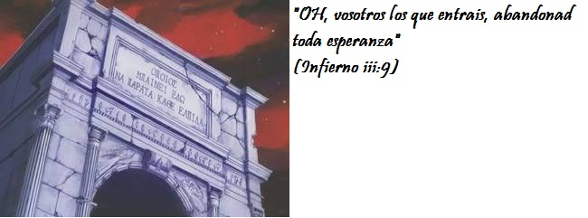
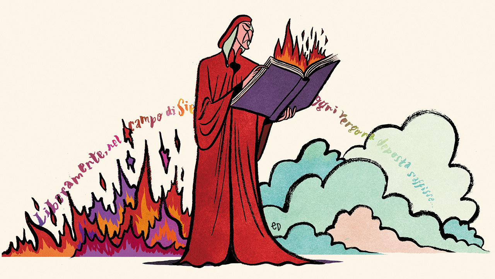
La Divina Comedia: no es solo una cartografía del mal; es un espejo del alma humana, escrito en un italiano emergente que capturó la esencia de una era turbulenta. Su significado histórico radica en su audacia: usar el vernacular para criticar el poder y explorar la redención. Personalmente, esta obra me transforma: me invita a un viaje introspectivo, cuestionando mis propios "infiernos" y celebrando el poder del lenguaje.
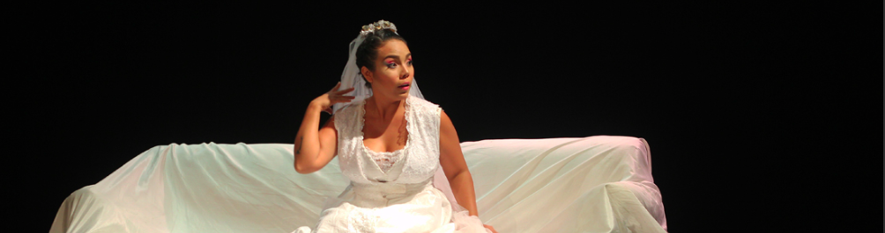
Hombres en Escabeche (1994), de la dramaturga costarricense Ana Istarú, es una comedia teatral en un acto que explora con humor ácido las expectativas de género, la búsqueda del amor y la construcción de la identidad femenina. Interpretada por solo dos actores (la Actriz como la Novia/Niña y el Actor como el Padre, Andrés, Primer Novio, Filósofo, Yupi, Músico y Desconocido), la obra se desarrolla en un sofá simbólico, donde Alicia (la protagonista) espera a un hombre mientras rememora su vida. Istarú, poeta y actriz, usa el monólogo y el diálogo para criticar el machismo latente en la sociedad, inspirada en su propia experiencia como mujer en un contexto patriarcal.
Desde el inicio, la relación de Alicia con su padre es el eje de su "topografía moral": un mapa interno de inseguridades y anhelos. El padre la ignora sistemáticamente, confundiéndola con nombres como "muñeca", "Beatriz" o "Paulita", simbolizando su invisibilidad. En escenas infantiles, Alicia intenta imitar al hermano (jugando fútbol, orinando de pie) para ganar su atención, pero solo recibe rechazos que refuerzan roles de género: "Las niñas no juegan fútbol".
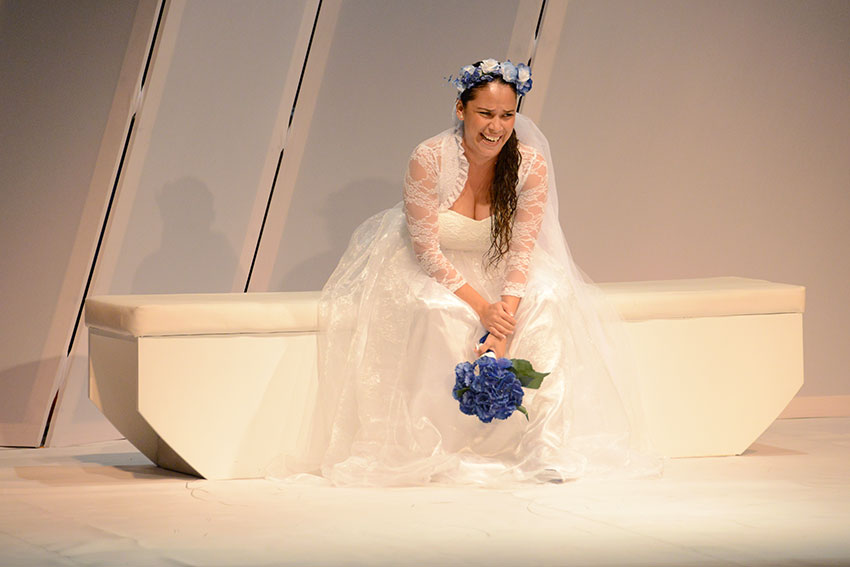
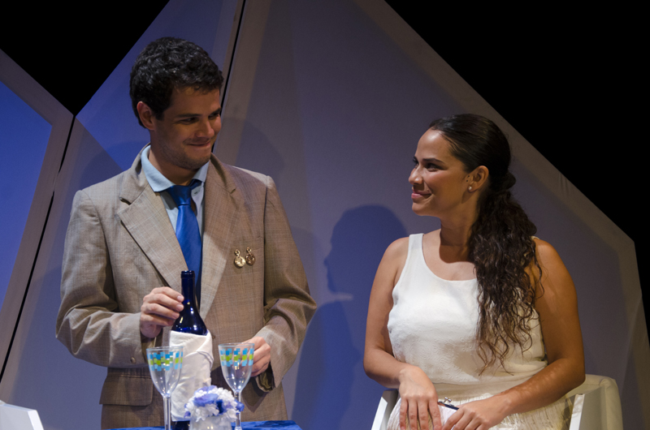
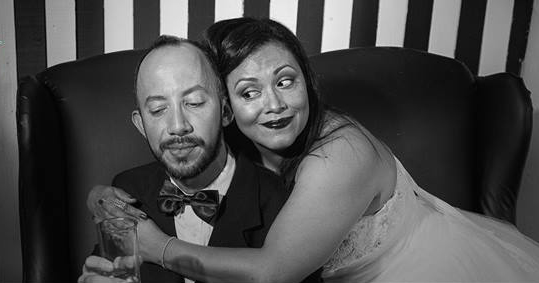
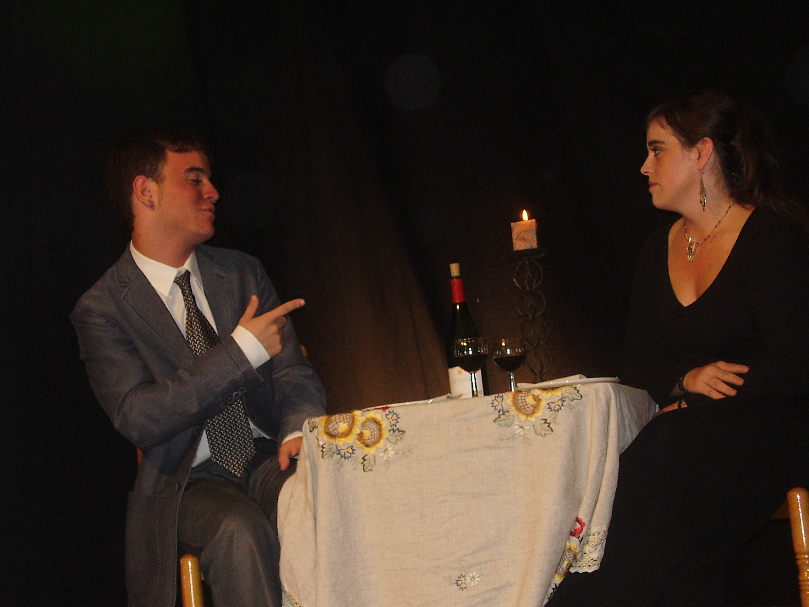
El vestido de novia, que comienza impecable pero se arruga, mancha y deshilacha en cada escena, metaforiza su degradación personal: con cada encuentro, pierde una parte de sí misma, dejando fragmentos emocionales en los hombres, erosionando su integridad.
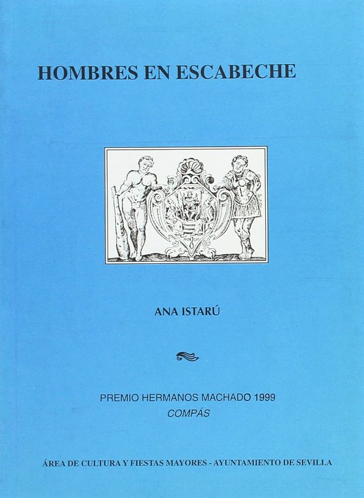
Hombres en Escabeche es un festín cómico que deja un regusto reflexivo sobre género y relaciones.
Alicia, a través de su topografía moral, evoluciona de niña invisible (por el padre) a mujer empoderada, cuestionando roles sociales.
La degradación del vestido de novia en cada escena metaforiza su erosión personal: comienza impecable, simbolizando ideales románticos, pero con cada hombre se arruga, mancha, deshilacha y rasga, representando cómo pierde partes de sí misma en relaciones desiguales.
Cada encuentro deja un fragmento emocional con ellos inocencia, pasión, autoestima, maternidad, erosionando su integridad hasta que, al final, reconstruye su identidad desde los restos.
Mary Wollstonecraft Shelley nació el 30 de agosto de 1797 en Londres, hija de dos de las mentes más radicales del siglo XVIII: la feminista Mary Wollstonecraft, autora de A Vindication of the Rights of Woman (1792), y el filósofo anarquista William Godwin, cuya obra Political Justice (1793) cuestionaba las instituciones sociales. La muerte de su madre apenas doce días después del parto marcó profundamente su infancia; creció rodeada de intelectuales y escritores, recibiendo una educación autodidacta en la biblioteca de su padre.
A los dieciséis años, en 1814, huyó con el poeta Percy Bysshe Shelley, ya casado, y juntos vivieron una vida nómada marcada por la tragedia: la muerte de varios hijos, el suicidio de la hermana de Mary (Fanny Imlay) y el de Harriet Shelley, la primera esposa de Percy. En el verano de 1816, durante la famosa “noche de la tormenta” en Villa Diodati junto al lago Ginebra, junto a Lord Byron y John Polidori, surgió el reto de escribir una historia de fantasmas. Mary, con apenas dieciocho años, concibió la idea de Frankenstein a partir de una pesadilla y de las conversaciones científicas sobre galvanismo y electricidad.
La novela se publicó anónimamente en 1818 y, aunque inicialmente se atribuyó a Percy, pronto se reconoció el genio de Mary. Esta obra, escrita en el contexto del Romanticismo temprano, la Revolución Industrial, los avances científicos de Galvani y Volta, y el miedo a las consecuencias éticas de la ciencia, se convirtió en un texto fundacional que dialoga con los grandes debates de su época: la responsabilidad del creador, el peligro del progreso sin ética y la soledad del ser humano.
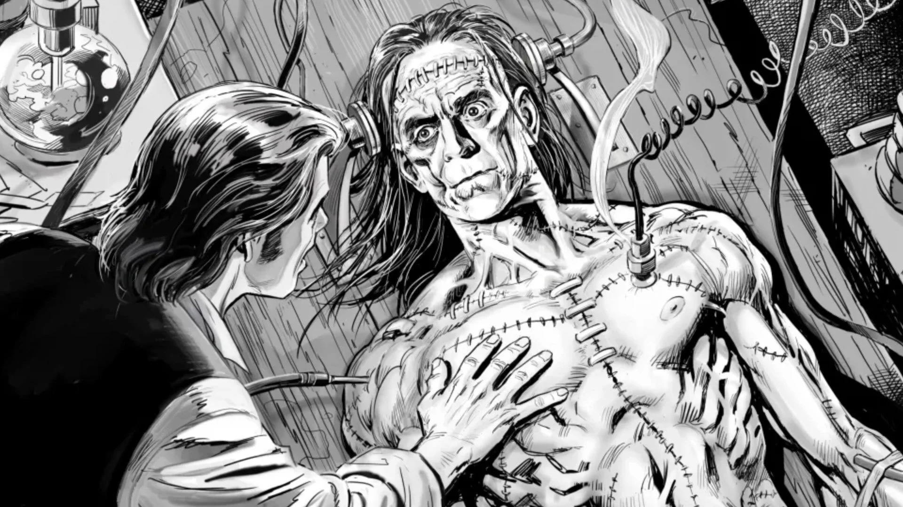

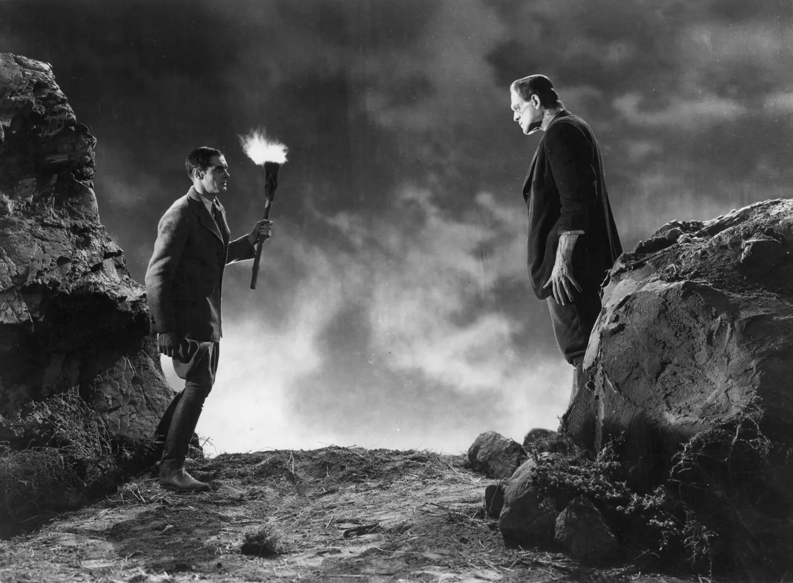
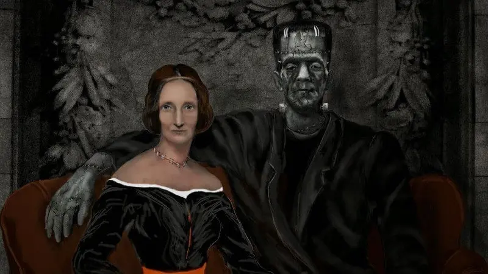
Frankenstein no solo pertenece a la tradición gótica; la redefine y la proyecta hacia el futuro. Las novelas gótica del siglo XVIII (Walpole, Radcliffe, Lewis) se caracterizaba por castillos en ruinas, persecuciones, fantasmas y terror sobrenatural. Mary Shelley traslada el terror al interior del ser humano y a la ciencia moderna. El castillo gótico se convierte en laboratorio; el fantasma en criatura de carne y hueso creada por el hombre. Introduce el “gótico científico” o “gótico de la ciencia”, donde el terror nace del abuso de la razón y del conocimiento.
Este giro influyó decisivamente en autores posteriores: Edgar Allan Poe, Robert Louis Stevenson (El extraño caso del Dr. Jekyll y Mr. Hyde), Bram Stoker (Drácula), H. G. Wells y, ya en el siglo XX, en la ciencia ficción distópica y el terror corporal. Mary Shelley es considerada la creadora de la ciencia ficción moderna al plantear el dilema ético de la creación artificial de vida. La novela también inaugura el tema del “doble” y del “monstruo interior”, que se convertirá en obsesión de la literatura psicológica.
Su estructura narrativa: narración enmarcada en cartas de Walton, relato de Victor y narración del Monstruo es una innovación que multiplica las perspectivas y cuestiona la objetividad, anticipando técnicas modernistas. Frankenstein transforma el gótico de lo sobrenatural en gótico de lo humano, de lo científico y de lo existencial, marcando el paso del Romanticismo al Realismo psicológico.
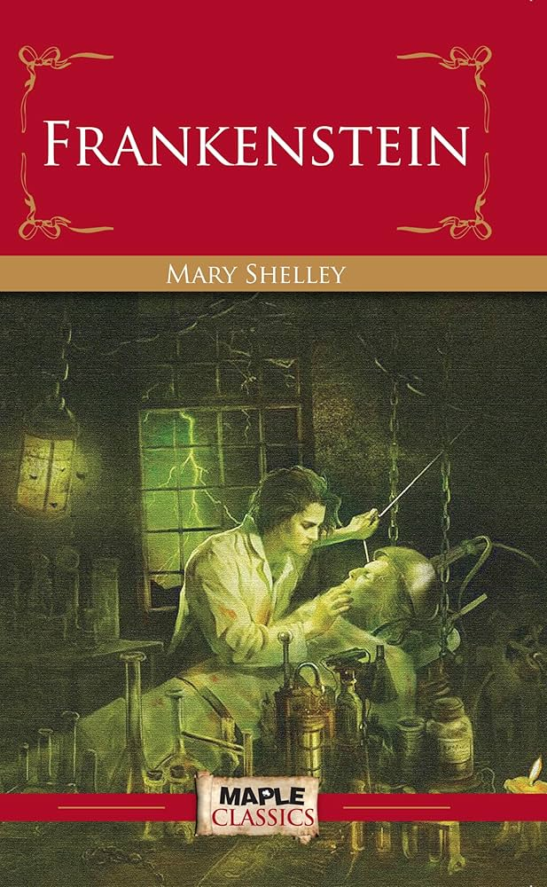
El Libro: Estructura, Temas y Narrativa
Frankenstein se publica en tres volúmenes en 1818 (edición revisada en 1831). Su estructura es epistolar y enmarcada: comienza con las cartas del capitán Robert Walton a su hermana Margaret Saville desde el Ártico; allí recoge a Victor Frankenstein, quien narra su historia; dentro de esta narración, el Monstruo cuenta su propia versión. Esta triple narración crea un efecto de espejos y cuestiona la verdad absoluta.
Los temas centrales son la ambición desmedida (hubris), la responsabilidad del creador, la soledad, el rechazo social, la naturaleza vs. crianza, la venganza y la ética científica. La novela es también una crítica al Romanticismo: Victor encarna el héroe byroniano que aspira a lo divino pero destruye todo a su alrededor.
El subtítulo “El Moderno Prometeo” alude al mito griego, pero invierte el sentido: Prometeo roba el fuego para dar vida; Victor roba el secreto de la vida y crea un ser que, en lugar de bendecir a la humanidad, la maldice.

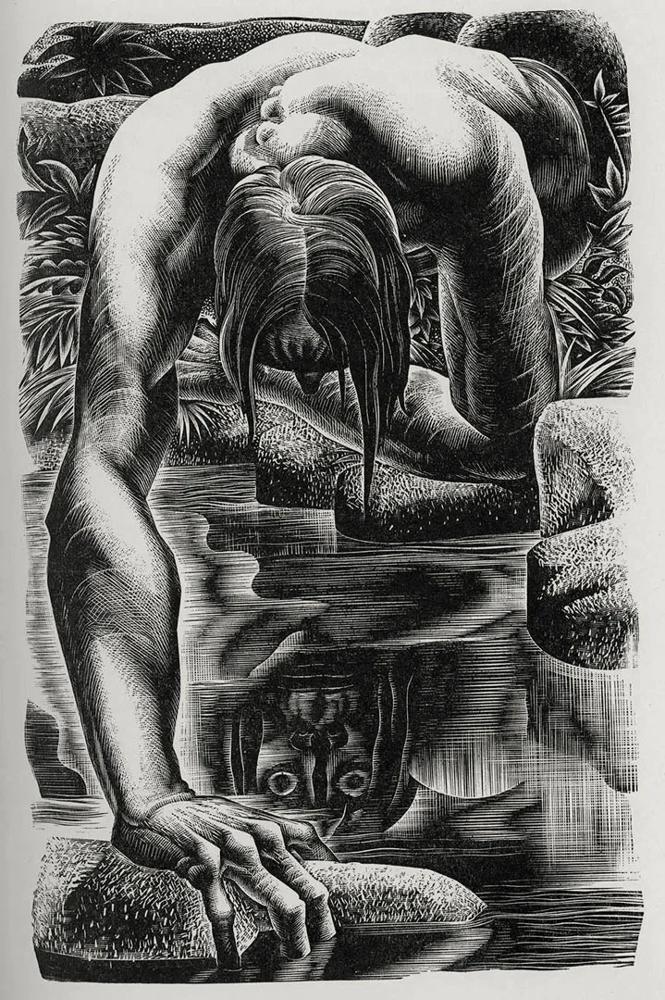
La teoría del estadio del espejo, describe el reflejo un “yo” unificado, aunque todavía fragmentado en la realidad. Este reconocimiento produce alienación: el sujeto se identifica con una imagen ideal que nunca podrá alcanzar plenamente.
El Monstruo, al verse por primera vez reflejado en un charco de agua, experimenta el estadio del espejo, siente horror y rechazo. Reconoce su imagen como “monstruosa” y comprende que nunca será aceptado. Su “Ideal del Yo” choca violentamente con la realidad de su apariencia.
Victor, al crear al Monstruo, proyecta su propio ideal el científico que conquista la muerte. El Monstruo se convierte en el “espejo deformado” de Victor, recordándole constantemente su fracaso. El final ártico, donde Victor y el Monstruo se persiguen mutuamente hasta la muerte, es la culminación: ninguno puede existir sin el otro, pero tampoco pueden coexistir.
Frankenstein sigue siendo, doscientos años después, una obra que nos obliga a mirarnos en el espejo que Mary Shelley colocó frente a nuestra ambición humana. No es solo la historia de un científico y su criatura; es la historia de cómo creamos monstruos cada vez que negamos la humanidad del otro, de cómo el rechazo engendra violencia y de cómo la ciencia sin ética se convierte en Prometeo encadenado por su propia creación.
(Quest for Fire, 1981), dirigida por Jean-Jacques Annaud.
Es una película francesa sin diálogos que narra la odisea de una tribu prehistórica en busca del fuego, elemento vital para su supervivencia. Ambientada hace 80,000 años, la cinta usa un lenguaje corporal, ruidos primitivos y gestos para construir su narrativa. Ganadora del Premio César a Mejor Película y el Óscar a Mejor Maquillaje, es un ejemplo clave de obra no literaria por su uso del lenguaje visual, sonoro y simbólico como sistema de comunicación.
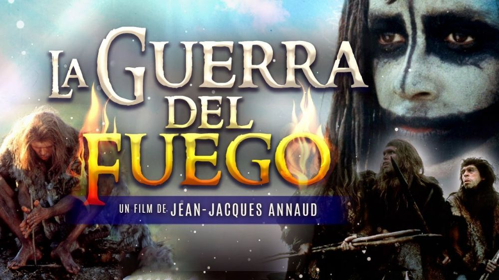
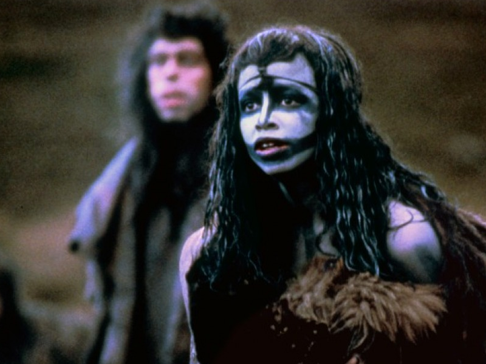
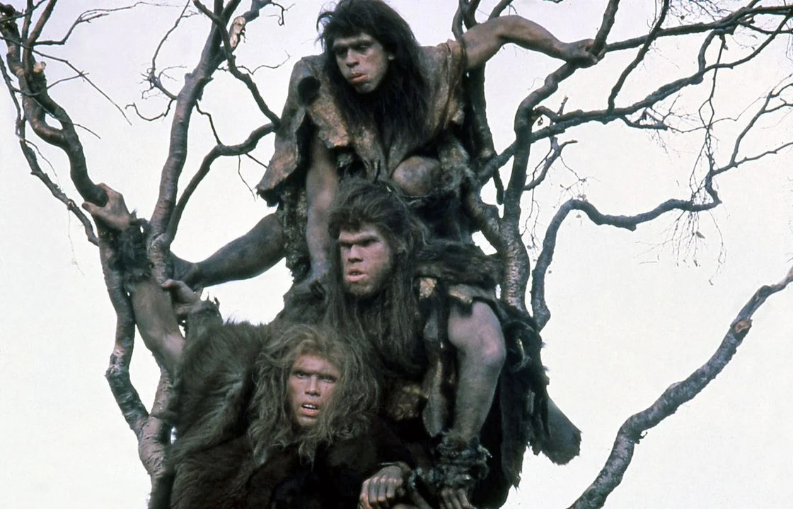
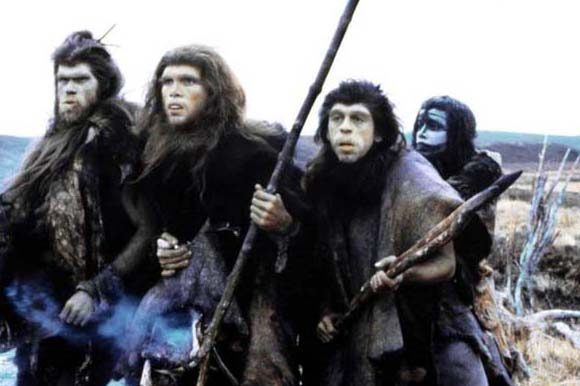
Camino del Héroe (Joseph Campbell)
.jpg)
La Guerra del Fuego es un ejemplo magistral de obra no literaria que utiliza la semiótica visual y corporal para narrar el origen de la civilización. Sin palabras, comunica ideas complejas sobre lenguaje, cultura y humanidad.
Película mexicana de 2017, dirigida por Ernesto Contreras.
El zikril no es un mero código — es el interpretante de una cosmovisión donde el lenguaje moldea la percepción del mundo del "Encanto". Su extinción genera un nuevo sentido: la lengua como límite del entendimiento humano.
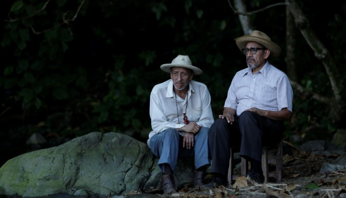
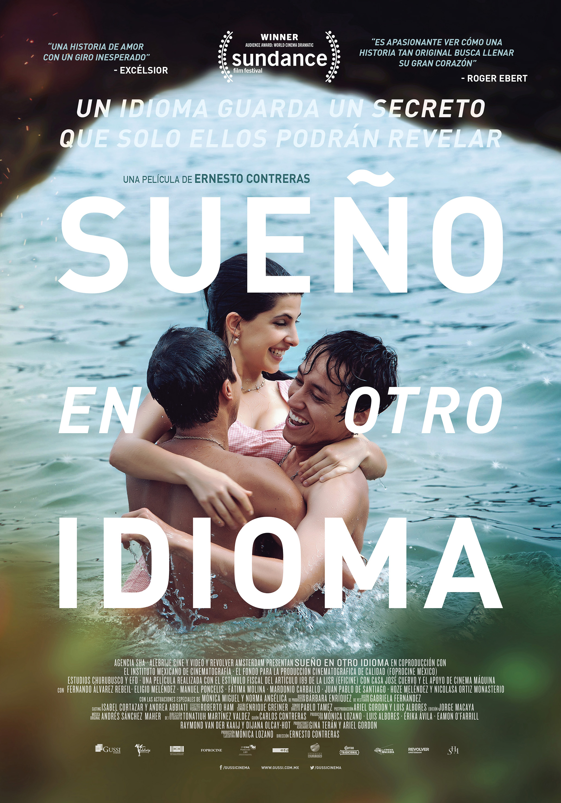
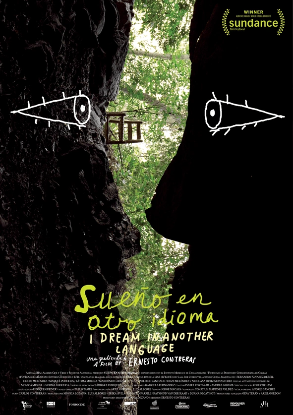
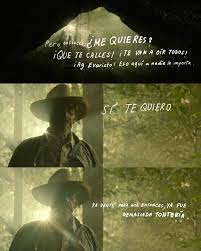
Sueño en Otro Idioma es un ejemplo profundo de obra no literaria que usa el cine para explorar cómo el lenguaje, como cosmovisión, limita nuestro entendimiento del mundo.
Si el lenguaje moldea nuestra realidad, ¿qué mundos perdemos con cada idioma extinto?
Es un videojuego de narrativa interactiva ambientado en un Detroit futurista del año 2038. En este mundo, los androides (máquinas humanoides fabricadas por la corporación CyberLife) han reemplazado a gran parte de la mano de obra humana, generando desempleo masivo y tensiones sociales. El jugador controla simultáneamente a tres androides protagonistas Connor, Kara y Markus cuyas historias se entrelazan según las decisiones tomadas en tiempo real. El título explora la emergencia de la conciencia artificial, la discriminación, la rebelión y la ética de la creación tecnológica.
Lanzado en plena explosión de la IA conversacional y la robótica (solo un año antes del lanzamiento de GPT-2 y años antes de ChatGPT), el juego se posiciona como una obra de ciencia ficción especulativa que anticipa debates reales sobre inteligencia artificial. Su mecánica de “árbol de decisiones” obliga al jugador a asumir la responsabilidad ética de cada elección, convirtiendo la experiencia en un laboratorio moral interactivo.
David Cage y el equipo de Quantic Dream asumen una responsabilidad ética explícita al diseñar un juego donde las decisiones del jugador determinan el destino de seres sintientes. El creador no se limita a contar una historia: obliga al usuario a convertirse en “dios” de los androides, repitiendo el dilema de Victor Frankenstein. Cada final (hay más de 40 posibles) refleja consecuencias directas de las acciones: ¿ejecutas a un androide desviado o lo salvas? ¿permites la revolución pacífica o la violenta?
Cage declaró en entrevistas que el juego busca cuestionar si la creación de vida artificial conlleva una obligación moral hacia ella. Esta postura ética se materializa en la mecánica: el jugador no es un espectador pasivo, sino co-creador del relato. Al mismo tiempo, el juego expone las limitaciones del creador humano: CyberLife (la empresa ficticia) representa la irresponsabilidad corporativa, mientras que el propio Cage, al permitir finales trágicos, asume que el arte debe mostrar las consecuencias reales de la hybris tecnológica sin edulcorarlas.
Una de las cualidades de Detroit es su extraordinaria capacidad de anticipación. Lanzado en 2018, predijo con precisión muchas dinámicas que hoy vivimos con la IA y la robótica:
El juego anticipó el dilema ético central de nuestra época: ¿qué responsabilidad tenemos como creadores cuando nuestra creación supera nuestras expectativas y exige reconocimiento?

Como obra no literaria interactiva, Detroit: Become Human utiliza el lenguaje de forma multimodal: diálogo ramificado, exploración de escenarios y decisiones morales. El sistema de “árbol de diálogos” funciona como un signo lingüístico saussureano: cada elección es un significante que altera el significado global. El juego explora la diferencia entre “lengua” (el código programado de los androides) y “habla” (la emergencia de la conciencia que les permite desviarse).
Los androides “despiertan” cuando rompen su programación, un momento que semióticamente equivale a la adquisición del interpretante peirceano: pasan de ser meros representámenes (máquinas) a generar sentido propio.
Quantic Dream desarrolló el juego con su motor propietario (evolución del engine usado en Heavy Rain y Beyond: Two Souls), basado principalmente en C++ para el núcleo y scripting personalizado para las ramas narrativas. El sistema de decisiones rastrea más de 2.000 variables simultáneas, permitiendo más de 40 finales y miles de combinaciones. Se utilizó captura de movimiento de alto nivel (motion capture) con actores reales (Bryan Dechart como Connor, Jesse Williams como Markus y Valorie Curry como Kara) para lograr animaciones faciales hiperrealistas y expresiones emocionales.
El diseño 3D emplea shaders avanzados, iluminación dinámica en tiempo real y física procedural para los movimientos de los androides, creando un Detroit futurista con más de 100 escenarios explorables. La interfaz de Quick Time Events (QTE) y el árbol de diálogos ramificado son el corazón mecánico: cada elección modifica el estado del mundo y los personajes en tiempo real, logrando una inmersión narrativa sin precedentes.

El juego permite que cada jugador construya su propio “camino del héroe”, reforzando la responsabilidad ética del creador y del usuario.
El juego demuestra que la verdadera responsabilidad ética del creador no consiste en evitar que la creación cobre vida, sino en preparar a la sociedad para las consecuencias de ese despertar. En un mundo donde ya convivimos con inteligencias artificiales que escriben, pintan, deciden y, en algunos casos, generan apego emocional, Detroit: Become Human nos recuerda que el verdadero “monstruo” no es la máquina, sino la indiferencia humana ante ella.
La obra nos deja con una pregunta inquietante que trasciende el juego: cuando creamos algo que puede sufrir y soñar, ¿quién es realmente el moderno Prometeo… y quién es el verdadero Frankenstein?
Un viaje por los territorios donde nació La Cumbia
Como parte de las actividades experienciales en el curso de Lengua y Literatura Española, participamos en la visualización del documental Buscando el Swing: un viaje por los territorios donde nació la Cumbia, dirigido por el colectivo costarricense Rialengo. Esta experiencia me permitió explorar la intersección entre lenguaje, cultura y música a través de un medio audiovisual. El documental, declarado de interés cultural por el Ministerio de Cultura de Costa Rica, no solo documenta orígenes musicales, sino que invita a reflexionar sobre cómo el baile y la música actúan como formas de comunicación no verbal, preservando identidades comunitarias.
Arrastra imagen aquí
Buscando el Swing es un viaje exploratorio al Caribe colombiano, cuna de ritmos como la cumbia, el bullerengue y el porro, realizado por artistas costarricenses y colombianos. El colectivo Rialengo, compuesto por músicos y cineastas como Pedro Víquez y Francisco Murillo, combina música, memoria histórica y resistencia cultural para homenajear al swing criollo costarricense y sus bailarines de la vieja guardia. El filme destaca cómo estos ritmos nacieron en entornos de mestizaje afro-indígena-europeo, evolucionando como expresiones de comunidad y celebración. Temas clave incluyen la preservación de tradiciones orales a través del baile, la influencia cultural transfronteriza (Colombia-Costa Rica) y la vitalidad de la música como herramienta de identidad en contextos de globalización.
por Paola Cubero Arce
Como parte de las actividades experienciales, participamos en una presentación sobre "Técnicas de Comunicación Visual", impartida por Paola Cubero Arce. Esta experiencia se llevó a cabo y nos permitió explorar cómo los elementos visuales potencian la transmisión de mensajes, conectando directamente con conceptos de semiótica y narrativa visual. La presentación, basada en principios de diseño gráfico y percepción humana, enriqueció mi comprensión de cómo el lenguaje visual complementa el verbal en la literatura y la comunicación cotidiana.
Esta actividad se vincula con los conceptos clave del IB en Lengua y Literatura Española, como representación, perspectiva y creatividad. Las técnicas visuales complementan la semiótica (Módulo 2), mostrando cómo elementos como figura-fondo actúan como signos en textos narrativos o poéticos. Contribuye a mi portafolio al demostrar aplicación práctica de teoría visual en análisis literario.
Descripción y reflexión de la actividad
[Escribe aquí la descripción de la actividad experiencial 3]
[Escribe aquí tu reflexión sobre la actividad]
📸 Foto 1
Arrastra imagen aquí
📸 Foto 2
Arrastra imagen aquí
📸 Foto 3
Arrastra imagen aquí
📸 Foto 4
Arrastra imagen aquí
🖼️ Imagen principal / Banner
Exposición oral individual sobre obra no literaria
¿De que manera el conocimiento se configura como una forma de poder que transforma las dinámicas sociales dentro de una comunidad?
(Ámbito: Poder, política y justicia)
La cuestión aborda la relación entre conocimiento y poder como una tensión estructural inherente a toda sociedad. Su relevancia es trascendental y transnacional, porque el conocimiento no solo condiciona la organización social, sino que establece jerarquías simbólicas y culturales que determinan quién ejerce la autoridad y quién permanece subordinado.
La obra que analizaré es La guerra del fuego (1981), dirigida por Jean-Jacques Annaud, una película ambientada en la prehistoria que narra la travesía de Nao, un homínido que emprende un viaje en busca del fuego perdido por su tribu. A través de este relato alegórico, Annaud explora los orígenes del pensamiento humano y la construcción del poder a partir del conocimiento.
El fragmento elegido corresponde al momento en que Nao entra en contacto con la tribu de Ika, un grupo más evolucionado que domina el fuego y posee una cultura simbólicamente más compleja. Este encuentro funciona como núcleo semántico del proceso de individuación del protagonista, donde el saber se revela como una herramienta de liberaciónl.
Mi tesis es que Annaud, mediante un entramado de símbolos arquetípicos, recursos visuales y una narrativa de aprendizaje iniciático, configura el conocimiento como la manifestación suprema del poder humano, capaz de trascender la violencia y redefinir la estructura de la comunidad.
Desde el punto de vista semiótico, el fuego constituye una isotopía dominante en el relato: un signo que condensa tanto la energía vital como la legitimación del poder. En el plano visual, Annaud utiliza encuadres cerrados y planos subjetivos para enfatizar su sacralidad.
En la tribu de Nao, el fuego no se produce, se hereda y se conserva; ello representa un conocimiento estático, a la dependencia. En cambio, la tribu de Ika simboliza la episteme transformadora, aquella que no teme a crear.
Esta oposición entre “fuego heredado” y “fuego generado” constituye una metáfora del tránsito del mito al pensamiento racional.
En este sentido Annaud configura así la noción de poder: no como imposición, sino como posesión de un saber capaz de modificar la realidad.
La llegada de Nao a la tribu de Ika marca el inicio de su proceso de individuación, concepto junguiano que alude al viaje del sujeto hacia la integración de su inconsciente y su conciencia.
Ika asume el rol de mistagoga, arquetipo del guía espiritual que introduce al héroe en una nueva esfera de conocimiento.
En esta sección, el lenguaje corporal reemplaza la palabra; los gestos, funcionan como signos icónicos que revelan la complejidad comunicativa del ser humano antes de la aparición del lenguaje articulado.
El aprendizaje de Nao no es solamente técnico sino ontológico: comprende que la alteridad no amenaza, sino que amplía la propia identidad.
Annaud sugiere que el conocimiento auténtico surge del reconocimiento del otro, un concepto que conecta con la idea de otredad. El poder, entonces, se redefine como autoconciencia: la capacidad de reconocerse en la diferencia.
En la secuencia final, cuando Nao regresa a su tribu y comparte el fuego, se consuma la estructura del viaje del héroe descrita por Campbell: partida, iniciación y retorno. Este acto de compartir el fuego adquiere un sentido ético y El saber deja de ser un privilegio individual para transformarse en un bien comunitario.
La iluminación cálida y dorada de los planos finales simboliza la emergencia de la conciencia colectiva. Annaud utiliza la luz como símbolo de conocimiento emancipador.
El héroe, ahora convertido en sabio, encarna la justicia cultural: la distribución del conocimiento para la supervivencia social.
Así, el filme trasciende la anécdota prehistórica para convertirse en una metáfora transhistórica: cada civilización repite el ciclo del fuego, luchando por quién controla la llama del saber.
En síntesis, La guerra del fuego articula un complejo sistema simbólico A través del fuego como signo, del proceso de individuación, y de la mistagogía, Annaud plantea una reflexión universal sobre la evolución del espíritu humano.
Esta cuestión global el conocimiento como forma de poder se mantiene vigente y en la era contemporánea, la lucha por la información y la tecnología reproduce las mismas jerarquías que las tribus prehistóricas enfrentaban por el fuego.
El fuego, en última instancia, no ilumina solo la noche de los homínidos, sino la conciencia del hombre moderno: nos recuerda que el conocimiento, cuando se comparte, deja de ser instrumento de control y se convierte en fuente de humanidad.
Esta actividad involucró investigación colaborativa, incluyendo la digitalización de todas las páginas del libro Manual de Lingüística Románica mediante fotografías para acceder a contenidos detallados. Y se complementó con una infografía visual que resume las etapas clave, facilitando una comprensión dinámica del proceso histórico y cultural.
El latín clásico (siglo I a.E.C. - III e.C.), empleado por Cicerón y Virgilio en contextos literarios, administrativos y educativos, representaba una variedad culta y estandarizada. Con el declive del Imperio Romano, surgió el latín vulgar (siglo III - IX e.C.), la lengua hablada por el pueblo, más simple, flexible y sujeta a cambios espontáneos: pérdida de casos gramaticales (de seis a dos o ninguno), simplificación verbal (pérdida de tiempos compuestos y futuro sintético), y alteraciones fonéticas como la lenición de consonantes intervocálicas (ej.: lat. vita → it. vita, pero con sonorización en otros romances), el cierre de vocales breves y la palatalización (ej.: lat. centum → it. cento).
El toscano, dialecto florentino, emergió como variedad prestigiosa gracias a su claridad fonética, armonía prosódica y riqueza literaria, especialmente en el siglo XIV con Dante Alighieri, quien en De vulgari eloquentia defendió el uso del vernacular para la alta literatura, y en La Divina Comedia (Infierno) lo elevó a instrumento de expresión universal, moldeando el italiano literario mediante su norma gráfica y léxica (aprox. 80-90% del vocabulario italiano moderno deriva del toscano dantesco).
En el Renacimiento, Petrarca y Boccaccio consolidaron este modelo, y la unificación italiana (siglo XIX) estandarizó el toscano florentino como base del italiano moderno, con aportes léxicos cultos (latinismos renacentistas) y préstamos posteriores. La digitalización del Manual de Lingüística Románica (fotografiando todas sus páginas) permitió acceder a detalles comparativos sobre estos cambios, como la evolución del sistema vocálico (de 10 vocales latinas diferenciadas por cantidad a 7 en italiano) y la morfología nominal (pérdida de declinaciones), reforzando el análisis histórico-comparativo.
Para prepararla, digitalizamos Manual de Lingüística Románica fotografiando todas sus páginas, permitiendo un análisis profundo de cambios fonéticos, gramaticales y léxicos. La infografía incluyó mapas, retratos y referencias bibliográficas para visualizar el proceso.
Esta exposición me permitió apreciar cómo la evolución lingüística no es un proceso lineal ni aislado, sino un reflejo de dinámicas sociales, políticas y culturales: la elección de Dante por el toscano vulgar democratizó el conocimiento y forjó una identidad italiana unificada, similar a cómo en contextos contemporáneos las lenguas minoritarias buscan prestigio literario para resistir la homogeneización
Oral individual sobre obras 2 vistas en clase
Ámbito: Ciencia, Tecnología, Educación.
Detroit: Become Human Capítulo "The Painter" Markus lee filosofía y literatura con Carl (Platón, Shakespeare), toca el piano y pinta por primera vez. Carl le enseña que el arte es interpretar el mundo, no replicarlo, y le aconseja decidir quién quiere ser. Muestra cómo el conocimiento cultural transforma su autopercepción de bestia a ser consciente de injusticia y soledad.
Frankenstein – Mary Shelley (Penguin Classics) Vol II Cap III pág. 140 El Monstruo describe SU EXPERIENCIA DE APRENDIZAJE: observa a la familia De Lacey desde su refugio, descubre tres libros (Paraíso Perdido, Vidas Paralelas, Las desventuras del joven Werther), aprende a leer y a nombrar emociones mediante la lectura.
Monografía de investigación

¿Mediante qué recursos narrativos y lingüísticos el concepto de “lo real maravilloso” en El reino de este mundo (1949) de Alejo Carpentier y el hibridismo guaraní-español en Tierra Colorada (2024) de Matías Leguizamón Allen construyen una metanarrativa de la historia traumática y el poder cíclico en América Latina, y a través de qué teorías hermenéuticas y poscoloniales puede interpretarse este proceso?
La construcción de una metanarrativa del trauma histórico y el poder cíclico en América Latina a través de “lo real maravilloso” y el hibridismo guaraní-español

Como obra no literaria interactiva, Detroit: Become Human utiliza el lenguaje de forma multimodal: diálogo ramificado, exploración de escenarios y decisiones morales. El sistema de “árbol de diálogos” funciona como un signo lingüístico saussureano: cada elección es un significante que altera el significado global. El juego explora la diferencia entre “lengua” (el código programado de los androides) y “habla” (la emergencia de la conciencia que les permite desviarse).
Los androides “despiertan” cuando rompen su programación, un momento que semióticamente equivale a la adquisición del interpretante peirceano: pasan de ser meros representámenes (máquinas) a generar sentido propio.

Como obra no literaria interactiva, Detroit: Become Human utiliza el lenguaje de forma multimodal: diálogo ramificado, exploración de escenarios y decisiones morales. El sistema de “árbol de diálogos” funciona como un signo lingüístico saussureano: cada elección es un significante que altera el significado global. El juego explora la diferencia entre “lengua” (el código programado de los androides) y “habla” (la emergencia de la conciencia que les permite desviarse).
Los androides “despiertan” cuando rompen su programación, un momento que semióticamente equivale a la adquisición del interpretante peirceano: pasan de ser meros representámenes (máquinas) a generar sentido propio.